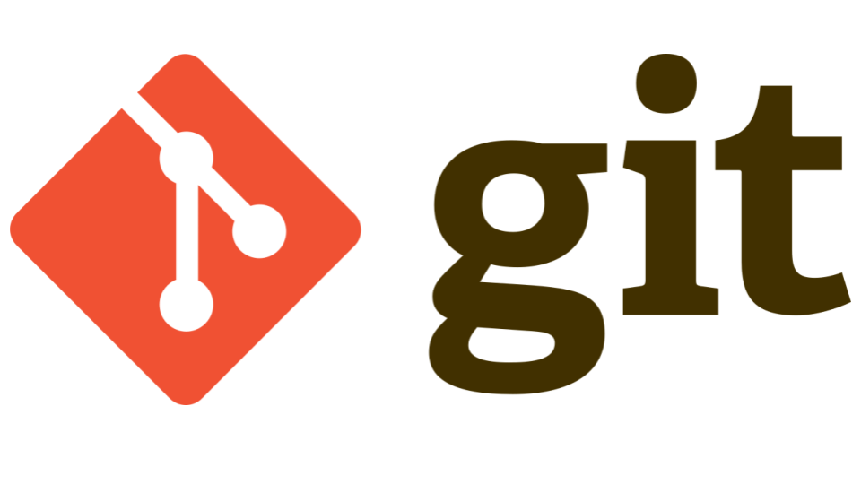

A junior at NJIT. Majoring on Information Technology, specializing in web development. Expected to graduate in May 2023. Is a volunteer in New Jersey Institute of Technology's student chapter of the ACM. Mainly helps with the Hackathon and open houses. Is now helping with CTF. Is also a member of the entertainment sector of the Vector, NJIT's newspaper. Used to be part of the Kids Who Code. A club that would teach elementary kids how to code scratch. Was part of the curriculum committee, working on what should be taught to them. Left due to the lack of activity thanks to covid. Also knows a bit about networking and system administration.
{% endblock %}